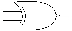
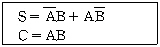
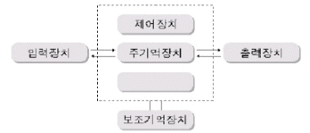
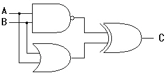
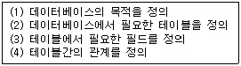
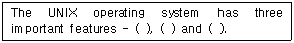
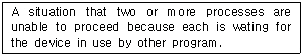

정보처리기능사 (2005-01-30 기출문제)
1과목: 전자 계산기 일반
1. 채널은 어떤 장치에서 명령을 받는가?
- 기억장치
- 출력장치
- 입력장치
- 제어장치
(정답률: 66%)

2. 다음 그림의 Gate는 어느 회로인가?

- eXclusive-AND
- eXclusive-NOR
- eXclusive-OR
- OR
(정답률: 67%)
3. 정보검색 엔진에서 AND, OR, NOT과 같은 연산자가 사용된다. 이 연산자를 무슨 연산자라 하는가?
- 불 연산자
- 드 모르강 연산자
- 우선 연산자
- 키워드 연산자
(정답률: 65%)
4. 다음과 같은 논리식으로 구성되는 회로는(단, S는 합(Sum), C는 자리올림(Carry)을 나타낸다.)?

- 반가산기(Half Adder)
- 전가산기(Full Adder)
- 전감산기(Full Subtracter)
- 부호기(Encoder)
(정답률: 82%)
5. 2 진수로 1의 보수를 구하는 Gate는?
- NOT
- NAND
- AND
- OR
(정답률: 53%)
6. 컴퓨터의 기본 구성을 표시한 것이다. 속에 알맞은 것은?

- 컴파일장치
- 연산장치
- 중앙처리장치
- 통신장치
(정답률: 76%)
7. 입·출력장치의 동작속도와 전자계산기 내부의 동작속도를 맞추는데 사용되는 레지스터는?
- 버퍼 레지스터
- 어드레스 레지스터
- 시퀀스 레지스터
- 시프트 레지스터
(정답률: 80%)
8. 주소 10에 20이란 값이 저장되어 있고, 주소 20에는 40이라는 값이 저장되어 있다고 할 때 간접 주소 지정에 의해 10번지를 엑세스하면 실제 꺼내지는 값은?
- 10
- 20
- 30
- 40
(정답률: 65%)
9. 기계어의 Operand에는 주로 어떤 내용이 들어 있는가?
- Register 번호
- Address
- Data
- Op-Code
(정답률: 61%)
10. 8개의 Bit로 표현 가능한 정보의 최대 가지수는?
- 255
- 256
- 257
- 258
(정답률: 84%)
11. A×(A×B+C)를 간략화 하면?
- A
- B
- C
- A×(B+C)
(정답률: 83%)
12. 8진수 234를 16진수로 바르게 표현한 것은?
- 9C
- AD
- 11B
- BC
(정답률: 73%)
13. 착오(Error) 검출은 물론 교정까지 가능한 코드는?
- 액세스 3코드(Access 3 Code)
- 해밍 코드(Hamming Code)
- 8-4-2-1 Code
- 죤슨 코드(Johnson Code)
(정답률: 84%)
14. 2진수 101101 + 101101인 경우의 합은?
- 1101010
- 1010010
- 1110001
- 1011010
(정답률: 57%)
15. CPU 에서 명령이 실행되는 순서를 제어하거나 특정 프로그램에 관련된 컴퓨터 시스템의 상태를 나타내고 유지하기 위한 제어 워드로서, 실행중인 CPU의 상황을 나타내는 것은?
- PSW
- MBR
- MAR
- PC
(정답률: 74%)
16. 인스트럭션(Instruction)이 제공하는 정보가 아닌 것은?
- 명령어 형식
- 작업 수행 시간
- 명령어 순서
- 데이터 주소
(정답률: 56%)
17. 0-주소 명령은 연산시 어떤 자료 구조를 이용하는가?
- STACK
- TREE
- QUEUE
- DEQUE
(정답률: 86%)
18. 기억장치에서 데이터를 꺼내거나 주변기기에서 데이터를 얻는데 요하는 시간으로서, 데이터를 요구하는 명령을 실행한 순간부터 데이터가 지정한 장소에 넣어지는 순간까지 소요되는 시간은?
- 사이클(Cycle) 시간
- 엑세스(Access) 시간
- 메모리(Memory) 시간
- 계산(Calculate) 시간
(정답률: 57%)
19. 이항(Binary) 연산에 해당하는 것은?
- COMPLEMENT
- AND
- ROTATE
- SHIFT
(정답률: 75%)
20. 그림과 같은 논리회로의 출력 C는 얼마인가(단, A = 1, B = 1 이다.)?

- 0
- 1
- 10
- 100
(정답률: 69%)
2과목: 패키지 활용
21. 데이터베이스 관리시 데이터사전이나 카탈로그를 유지 관리 할 수 있는 사람은?
- 단말기 사용자
- 응용 프로그래머
- 데이터베이스 일반 사용자
- 데이터베이스 관리자
(정답률: 78%)
22. 데이터베이스 디자인 단계의 순서가 옳은 것은?

- (1)-(2)-(3)-(4)
- (1)-(3)-(2)-(4)
- (1)-(2)-(4)-(3)
- (1)-(4)-(2)-(3)
(정답률: 63%)
23. 다음 SQL 검색문의 의미로 가장 적절한 것은?
- 학생 테이블의 학과명을 모두 검색하라.
- 학생 테이블의 학과명을 중복되지 않게 모두 검색하라.
- 학생 테이블의 학과명 중에서 중복된 학과명은 모두 검색하라.
- 학생 테이블을 학과명 구별하지 말고 모두 검색하라.
(정답률: 71%)
24. 하나의 테이블에 한 행의 데이터를 등록하는 방법으로 옳은 것은?
- INSERT INTO 고객 (계좌번호, 이름, 금액) VALUES(‘111’, ‘홍길동’, 5000) ;
- UPDATE 고객 SET 금액 = 10000 WHERE 이름 = 홍길동 ;
- SELECT * FROM 고객 ;
- CREATE TABLE 고객 (계좌번호 NUMBER (3,0), 이름 VARCHAR2 (8), 금액 NUMBER (5,0)) ;
(정답률: 48%)
25. SQL에서 조건문을 기술할 수 있는 절은?
- FROM 절
- INTO 절
- WHERE 절
- CONDITION 절
(정답률: 57%)
26. 테이블 구조 변경시 사용하는 SQL 명령은?
- CREATE TABLE
- ALTER TABLE
- DROP TABLE
- INSERT TABLE
(정답률: 70%)
27. Windows용 프레젠테이션에서 하나의 화면을 구성하는 개개의 요소들을 무엇이라 하는가?
- 시나리오
- 개요
- 스크린팁
- 개체(Object)
(정답률: 75%)
28. 스프레드시트 작업에서 반복되거나 복잡한 단계를 수행하는 작업을 일괄적으로 자동화시켜 처리하는 방법에 해당하는 것은?
- 매크로
- 정렬
- 검색
- 필터
(정답률: 84%)
29. Windows용 스프레드시트의 기능과 거리가 먼 것은?
- 정렬 기능
- 자동 계산 기능
- 그래프 표현기능
- 동영상 처리 기능
(정답률: 81%)
30. 데이터베이스를 사용하는 경우의 장점이 아닌 것은?
- 데이터 중복의 최대화
- 데이터의 무결성 유지
- 데이터의 공용 사용
- 데이터의 일관성 유지
(정답률: 78%)
3과목: PC 운영 체제
31. Windows 98에서 하드디스크에 있는 파일을 휴지통에 버리지 않고 바로 삭제하려고 한다. 파일 선택 후 어떤 키를 눌러야 하는가?
- Del
- Alt + Del
- Ctrl + Del
- Shift + Del
(정답률: 73%)
32. 실행중인 프로그램이나 시스템을 중지시킬 수 있는 수행 중단 기능(break on)을 설정할 수 있는 도스의 파일은?
- IO.SYS
- COMMAND.COM
- CONFIG.SYS
- AUTOEXEC.BAT
(정답률: 55%)
33. 도스(MS-DOS)에서 Attrib 명령어의 옵션에 대한 설명으로 옳지 않은 것은?
- 백업 파일 속성 : A
- 시스템 파일 속성 : S
- 읽기 전용 파일 속성 : P
- 숨김 파일 속성 : H
(정답률: 71%)
34. 운영체제의 목적이 아닌 것은?
- 처리능력(Throughput) 향상
- 턴 어라운드 타임(Turnaround Time)의 증가
- 사용가능도(Availability)의 증대
- 신뢰도(Reliability)의 향상
(정답률: 77%)
35. Windows 98에서 단축 아이콘에 대한 설명으로 옳지 않은 것은?
- 바탕화면에서 단축 아이콘을 삭제하면 실제 연결되어 있는 프로그램도 삭제된다.
- 실제 실행 파일과 연결해 놓은 아이콘을 말한다.
- 사용자 임의로 단축아이콘을 생성하거나 삭제시킬 수 있다.
- 아이콘과 다른 것은 아이콘 밑에 화살표 표시가 있다.
(정답률: 76%)
36. 다음 괄호 안의 내용으로 적절하지 않은 것은?

- Kernel
- Shell
- File System
- Compiler
(정답률: 55%)
37. Windows 98의 제어판에서 시동 디스크를 만들려면 어떤 항목을 선택하여야 되는가?
- 시스템
- 사용자
- 내게 필요한 옵션
- 프로그램 추가/제거
(정답률: 62%)
38. UNIX에서 네트워크상의 문제를 진단할 수 있는 명령어는?
- ping
- cd
- pwd
- who
(정답률: 75%)
39. UNIX에서 입력시 사용되는 “Kill” 명령에 대한 설명으로 옳은 것은?
- 마지막에 입력한 문자를 지운다.
- 마지막에 입력한 단어를 지운다.
- 한 줄 전체를 지운다.
- 새 줄의 입력을 위하여 한 줄을 띄운다.
(정답률: 71%)
40. Windows 98에서 클립보드에 현재 화면에서 활성윈도우를 복사하는 기능키는?
- Ctrl + Print Screen
- Ctrl + C
- Alt + Print Screen
- Ctrl + V
(정답률: 48%)
41. UNIX에서 현재 작업중인 프로세스의 상태를 알아볼 때 사용하는 명령어는?
- ls
- ps
- kill
- chmod
(정답률: 58%)
42. 업무 처리를 실시간 시스템(Real-Time System)으로 처리할 필요가 없는 것은?
- 적의 공중 공격에 대비하여 동시에 여러 지점을 감시하는 시스템.
- 가솔린 정련에서 온도가 너무 높이 올라가는 경우 폭발을 방지하기 위해 조치를 취하는 시스템.
- 고객명단 자료를 월 단위로 묶어 처리하는 시스템.
- 교통 관리, 비행조정 등과 같은 외부 상태에 대한 신속한 제어를 목적으로 하는 시스템.
(정답률: 75%)
43. 다음의 설명이 의미하는 것은?

- Database
- Compiler
- Deadlock
- Spooling
(정답률: 61%)
44. Windows 98에서 화면보호기의 설정은 어디에서 하는가?
- 시스템
- 멀티미디어
- 디스플레이
- 내게 필요한 옵션
(정답률: 68%)
45. Windows 98에서 바탕화면에 있는 아이콘을 정렬하려고 할 때 기본적으로 제공하는 아이콘 정렬 방식이 아닌 것은?
- 계단식 정렬
- 크기별 정렬
- 자동 정렬
- 종류별 정렬
(정답률: 73%)
46. 도스(MS-DOS)에서 사용자가 파일을 잘못해서 정보를 삭제하였을 때, 이를 복원하는 명령어는?
- DELETE
- UNDELETE
- UNFORMAT
- ANTI
(정답률: 75%)
47. 하드디스크의 분할을 설정하고 논리적 드라이브 번호를 할당하는 DOS의 외부명령어는?
- FDISK
- CHKDSK
- RECOVER
- DISKCOMP
(정답률: 66%)
48. 운영체제의 구성 요소 중 프로세서를 생성, 실행, 중단, 소멸시키는 것은?
- 스케줄러(Scheduler)
- 드라이버(Driver)
- 에디터(Editor)
- 스풀러(Spooler)
(정답률: 62%)
49. Windows 98에서 “시스템 도구” 메뉴에 포함되지 않는 것은?
- 디스크 검사
- 디스크 조각 모음
- 디스크 정리
- 디스크 포맷
(정답률: 60%)
50. 시스템의 날짜를 변경하거나, 확인할 수 있는 DOS 명령어는?
- TIME
- DATE
- MD
- DEL
(정답률: 72%)
4과목: 정보 통신 일반
51. 다음 중 가청 주파수의 범위는 대략 얼마인가?
- 16[㎐]～0.2[㎑]
- 300[㎐]～4[㎑]
- 20[㎐]～20[㎑]
- 300[㎐]～200[㎑]
(정답률: 41%)
52. 이동 통신 방식에서 사용되는 무선주파수 접속 방식이 아닌 것은?
- 위상분할 다중화 접속 방식(PDMA)
- 주파수분할 다중화 접속 방식(FDMA)
- 시분할 다중화 접속 방식(TDMA)
- 코드분할 다중화 접속 방식(CDMA)
(정답률: 27%)
53. 10개국(Station)을 서로 망형 통신망으로 구성시 요구되는 통신 회선수는?
- 15
- 25
- 35
- 45
(정답률: 63%)
54. 다음 중 고품위 TV(HDTV)의 주사선수에 해당되는 것은?
- 525
- 625
- 950
- 1125
(정답률: 37%)
55. 데이터 전송의 반송 방식 중 진폭변조 방식에 관한 설명으로 틀린 것은?
- 전송로의 레벨 변동에 영향을 받기 쉽다.
- 복조과정에서 포락선 검파를 할 수 있다.
- 자동주파수 제어회로가 필요하다.
- 수신부에 바이어스 디스토션을 방지하기 위한 보정 회로가 필요하다.
(정답률: 30%)
56. 정보통신 신호의 전송이 양쪽에서 가능하나, 동시전송은 불가능하고 한 쪽 방향으로만 전송이 교대로 이루어지는 통신 방식은?
- 반송 주파수 통신 방식
- 반이중 통신 방식
- 단방향 통신 방식
- 전이중 통신 방식
(정답률: 56%)
57. 마이크로파(Microwave) 통신방식과 관계없는 것은?
- 전자파를 이용하는 무선 통신 방식이다.
- 광을 이용하므로 전송 속도가 빠르다.
- 이동 통신 수단으로도 이용되고 있다.
- 중계거리를 고려하여야 한다.
(정답률: 47%)
58. 단말장치가 변복조장치에게 데이터를 보내려 하고 있음을 나타내는 제어신호는?
- CTS(Clear To Send)
- RTS(Request To Send)
- DSR(Data Set Ready)
- RI(Ring Indication)
(정답률: 39%)
59. 광케이블이 일반전화용 평형케이블과 비교하여 이점이 아닌 것은?
- 전송용량이 커서 많은 신호를 한 번에 전송할 수 있다.
- 케이블간의 누화는 무시될 수 있을 정도이다.
- 주파수에 따른 신호 감쇄나 전송지연의 변화가 크다.
- 통신신호의 전파속도가 빠르다.
(정답률: 45%)
60. FEP(Front-End Processor)의 기능과 가장 거리가 먼 것은?
- 여러 통신라인을 중앙 컴퓨터에 연결
- 터미널의 메시지(Message)가 보낼 상태로 있는지 받을 상태로 있는지 검색
- 에러의 검출
- 데이터 파일(File)의 영구 보전
(정답률: 34%)